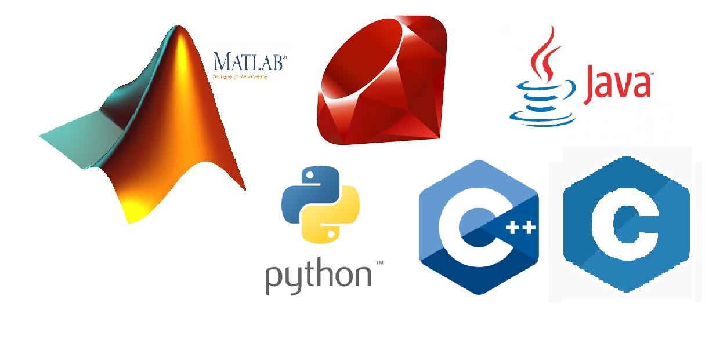

About me
I am a Mechanical and Aeronautical Engineer, graduated in Universidad Pontificia Bolivariana in Medellín, Colombia. During the study of these amazing degrees, I realized that my passion was programming. So, I decided to start learning several programming languages in order to be able to work as a developer. It is my dream.

In the university I learned Matlab and C. And after getting my degree I started to learn autodidactly Java and Python. Then I got the opportunity to enter to Make it Real to learn Web Developing with Rails. Then I received the opportunity to go to a training in C++ in the company Globant. That was where it all started.
Then I started participating and creating my own projects.
My greatest hobby is to learn new languages. I speak fluently English (IELTS 7.5), French (DELF B2) and Spanish (nativ). Besides, I have average level of German and basics of Italian.